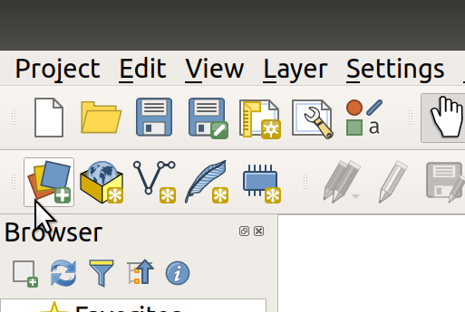

Chapter 3 Downloading and loading data
A vital skill for doing using GIS skills to solve real-world problems is finding, downloading and importing data.
Often, the first stage in the data downloading/loading process is to find the data online. In this case we will access data from the following site, which contains data we prepared earlier for the course: github.com/ITSLeeds/SSPA/releases.
Look at the file in your explorer…
To open a file in QGIS first create a QGIS project.
To load a geographic data file, click on the Data Source Manager button in the top left corner of QGIS (see Figure 3.1).

FIGURE 3.1: The Data Source Manager icon